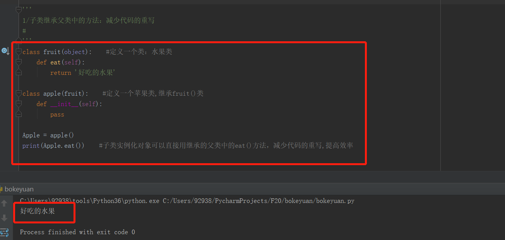
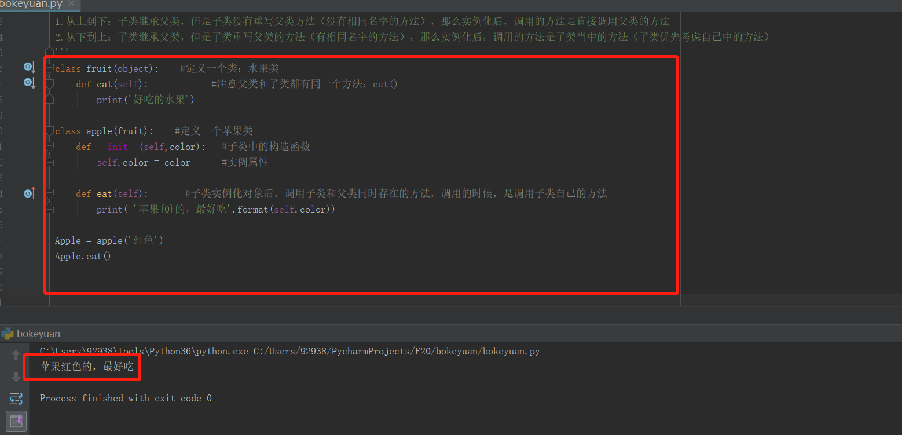
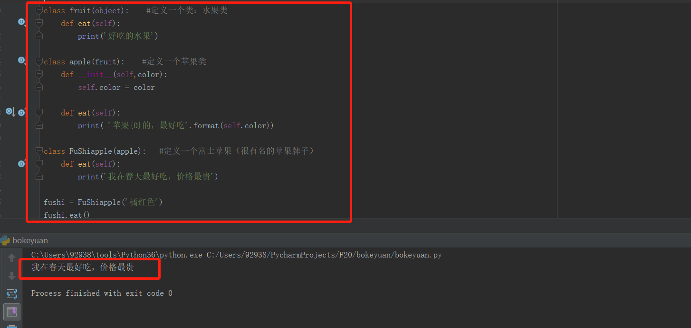
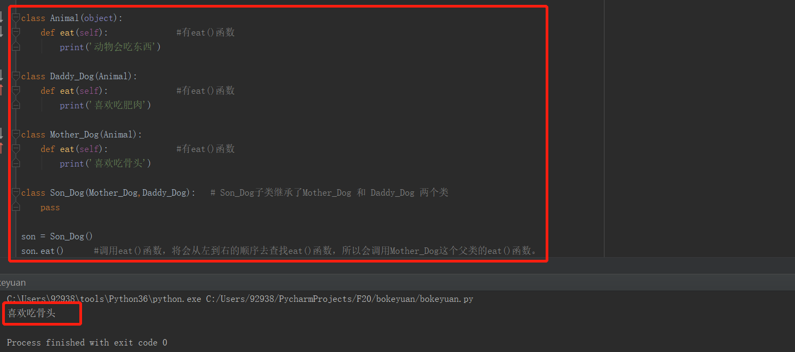
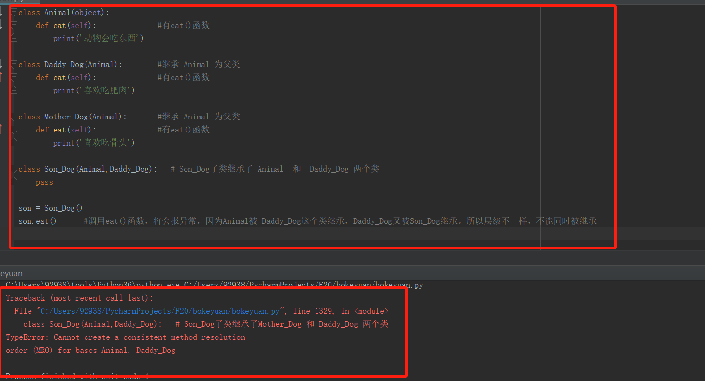

最近生病了，python更新要结束了，但是这才是真正的开始。因为后面要更新的是UnitTest单元测试框架，以及后续的Requests库。在后续的笔记会补充一些python的其他细节笔记。我想是这样的hhh，开始更新。
接着前面的笔记开始，子类继承父类中的方法，目的是减少代码的重写。我们看下代码：
1 class fruit(object): #定义一个类：水果类
2 def eat(self):
3 return '好吃的水果'
4
5 class apple(fruit): #定义一个苹果类,继承fruit()类
6 def __init__(self):
7 pass
8
9 Apple = apple()
10 print(Apple.eat()) #子类实例化对象可以直接用继承的父类中的eat()方法，减少代码的重写,提高效率代码中，我们可以看到，子类apple继承了父类fruit中的方法，所以可以在实例化对象后，直接使用父类中的方法，以减少代码重写。下面是执行后的结果：

有时候，父类的方法我们不能使用，虽然方法是一样的，但是内部的逻辑还是不一样，我们需要子类有自己的特性存在。这时候我们可以在子类中，写同样的方法。需要注意的是，当父类和子类有同样的方法名的时候，调用的是：子类自己内部的方法。
我们看下单个类继承的原则：
1.从上到下：子类继承父类，但是子类没有重写父类方法（没有相同名字的方法），那么实例化后，调用的方法是直接调用父类的方法
2.从下到上：子类继承父类，但是子类重写父类的方法（有相同名字的方法），那么实例化后，调用的方法是子类当中的方法（子类优先考虑自己中的方法） 1 class fruit(object): #定义一个类：水果类
2 def eat(self): #注意父类和子类都有同一个方法：eat()
3 print('好吃的水果')
4
5 class apple(fruit): #定义一个苹果类
6 def __init__(self,color): #子类中的构造函数
7 self.color = color #实例属性
8
9 def eat(self): #子类实例化对象后，调用子类和父类同时存在的方法，调用的时候，是调用子类自己的方法
10 print( '苹果{0}的，最好吃'.format(self.color))
11
12 Apple = apple('红色')
13 Apple.eat()
我们看下：如果子类和父类有同样的方法名，那么调用的方法，将是子类内部的方法。而不是调用父类的方法。看清楚 FuShiapple(apple): 它只是继承了一个apple为父类。
1 class fruit(object): #定义一个类：水果类
2 def eat(self):
3 print('好吃的水果')
4
5 class apple(fruit): #定义一个苹果类
6 def __init__(self,color):
7 self.color = color
8
9 def eat(self):
10 print( '苹果{0}的，最好吃'.format(self.color))
11
12 class FuShiapple(apple): #定义一个富士苹果（很有名的苹果牌子）
13
14 def eat(self):
15 print('我在春天最好吃，价格最贵')
16
17 '''这里的'橘红色'参数是因为FuShiapple()继承的父类是apple()，在apple()类里面有构造函数的参数color，所以子类FuShiapple()
18 在实例化对象初始化的时候，也会对父类进行初始化操作，所以需要有个参数传给父类的color实例属性作为参数初始化'''
19
20 fushi = FuShiapple('橘红色')
21 fushi.eat()
接下来我们看下多个类继承的规则：从左到右继承
1 class Animal(object):
2 def eat(self): #有eat()函数
3 print('动物会吃东西')
4
5 class Daddy_Dog(Animal):
6 def eat(self): #有eat()函数
7 print('喜欢吃肥肉')
8
9 class Mother_Dog(Animal):
10 def eat(self): #有eat()函数
11 print('喜欢吃骨头')
12
13 class Son_Dog(Mother_Dog,Daddy_Dog): # Son_Dog子类继承了Mother_Dog 和 Daddy_Dog 两个类
14 pass
15
16 son = Son_Dog()
17 son.eat() #调用eat()函数，将会从左到右的顺序去查找eat()函数，所以会调用Mother_Dog这个父类的eat()函数。因为从左到右继承。
多个类继承，需要注意的是，类的层级不一样，所以不能同时继承。（可能这样表达不专业，但是看下代码吧）
1 class Animal(object):
2 def eat(self): #有eat()函数
3 print('动物会吃东西')
4
5 class Daddy_Dog(Animal): #继承 Animal 为父类
6 def eat(self): #有eat()函数
7 print('喜欢吃肥肉')
8
9 class Mother_Dog(Animal): #继承 Animal 为父类
10 def eat(self): #有eat()函数
11 print('喜欢吃骨头')
12
13 class Son_Dog(Animal,Daddy_Dog): # Son_Dog子类继承了 Animal 和 Daddy_Dog 两个类
14 pass
15
16 son = Son_Dog()
17 son.eat() #调用eat()函数，将会报异常，因为Animal被 Daddy_Dog这个类继承，Daddy_Dog又被Son_Dog继承。所以层级不一样，不能同时被继承
我们发现代码在执行的时候报异常了。我们的 Daddy_Dog 是 Animal的子类，Son_Dog 是 Daddy_Dog的子类。我们可以说 Animal 是Son_Dog的爷爷类，所以它不能同时继承Daddy_Dog 和 Animal 这样说比较容易理解我所要表达的：不一个层级的类，不能被同时继承。-------------这样表达不是专业的，但是容易理解吧。请大神勿喷，如果有更好的专业的表达请多多指教。
---------------谢谢，来自在学习的小白。 python要了解的部分，目前就这么多。后面开始框架的笔记。